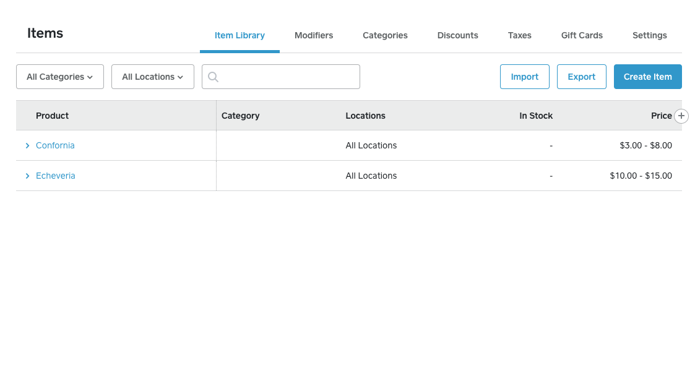

Hi
What is going on?
-
Overview of my environment
-
Setting up WooCommerce & Square with Wordpress
-
Highlighting Item Synchronization & Payment form
My Wordpress Environment
'
My Square Account

'
Installing WooCommerce & WooCommerce Square
'
'
✓ Installing WooCommerce & WooCommerce Square
'
Item & Inventory Synchronization
'
Payment Form